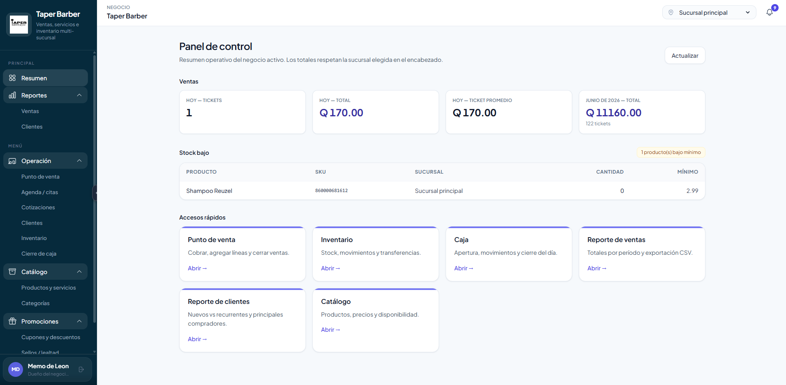
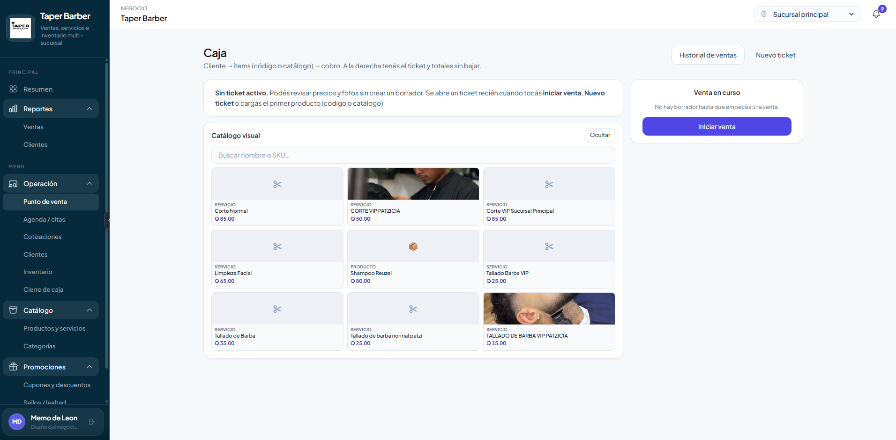

El cliente depende del personal para saber sus sellos, beneficios o historial.
Propuesta exclusiva para Taper Barbería
CRM + app propia para clientes de Taper Barbería.
Evolucionamos el sistema operativo actual con una experiencia para el cliente final: historial de consumos, QR único, promociones, tarjeta de lealtad y acceso instalable desde el teléfono.
Q0
Primer año
Q0
Por sucursal / mes
PLUS
App para clientes
💈 Taper Club
BLACK
Tarjeta de Lealtad
4 de 6 cortes
Te faltan 2 para tu recompensa
QR único del cliente
Último registro
Corte + Shampoo
Q115
El concepto
Una app web privada para Taper Barbería, instalable en el teléfono.
No será necesario publicarla en Play Store ni App Store. Los clientes podrán ingresar desde un enlace, iniciar sesión y guardar la app en la pantalla principal de su celular.
La app estará enfocada en que el cliente consulte su tarjeta de lealtad, promociones, historial, catálogo, sucursales y consumos. Del lado interno, el equipo mantiene control operativo con ventas, inventario, servicios, clientes, promociones y reportes.
Flujo de uso
- 01 Cliente se registra con Google.
- 02 La app genera su QR único.
- 03 El personal escanea el QR después del pago.
- 04 Se registran servicios, productos y total pagado.
- 05 El cliente ve su tarjeta e historial actualizados.
Evolución del sistema actual
El CRM anterior ya opera el negocio; el nuevo valor está en abrirle una puerta al cliente.
Tomamos como punto de partida las funciones internas que Taper Barber ya usa: ventas, caja, catálogo, inventario, reportes, cupones y sellos de lealtad.


Nuestro PLUS
Una app de cliente conectada al CRM.
El sistema anterior está pensado principalmente para el equipo interno. La propuesta agrega una experiencia propia para que cada cliente pueda consultar su avance, consumos, promociones y beneficios sin depender del personal.
- Perfil del cliente con historial de visitas y compras.
- QR personal para registrar consumos desde caja.
- Tarjeta de lealtad visible y fácil de entender.
- Promociones y cupones mostrados dentro de la app.
- Catálogo y sucursales disponibles desde el celular.
- Base preparada para reservas, WhatsApp, NFC o POS externo.
El cliente tiene su propia app instalable, con información actualizada y marca Taper Barber.
Más fidelización, más recompra y una base de datos útil para campañas futuras.
Funcionalidades incluidas
Todo lo necesario para operar, fidelizar y crecer.
La plataforma combina la operación interna que ya necesita la barbería con una capa nueva de experiencia para clientes.
Login con Google
Registro e inicio de sesión rápido para clientes sin manejar contraseñas tradicionales.
Tarjeta de lealtad virtual
Progreso visual de cortes acumulados, recompensa disponible e historial de beneficios sin preguntar en caja.
QR único por cliente
Identificación rápida para registrar cortes, productos y consumos desde el panel interno.
App Web PWA
Instalable en Android y iPhone desde el navegador, sin tiendas de aplicaciones.
Historial de consumos
El cliente podrá ver visitas, servicios comprados, productos adquiridos y beneficios utilizados.
Catálogo de productos
Productos visibles para clientes como shampoo, ceras, pomadas, aceites y tratamientos.
Mapa de sucursales
Ubicaciones actuales con botón para abrir ruta en Google Maps.
Dashboard Admin
Panel interno para revisar clientes, ventas, sucursales, productos, servicios y actividad.
Gestión de servicios
Creación de servicios como corte clásico, fade, barba, corte + barba y tratamientos.
Inventario
Control de productos, precios, existencias y disponibilidad por sucursal.
Usuarios empresa
Accesos para dueño, administrador, cajero o barbero con permisos definidos.
Comprobante interno
Registro de venta y comprobante digital interno para control del negocio.
Base de datos clientes
Información organizada de clientes, visitas, compras, sucursal frecuente y actividad.
Promociones y avisos
Comunicación mediante correo electrónico y notificaciones push para novedades importantes.
Niveles VIP opcionales
Silver, Gold, Platinum y Black para generar estatus, beneficios y mayor engagement.
Multi-sucursal
Preparado para operar las 2 sucursales actuales y agregar más en el futuro.
Métricas de negocio
Clientes activos, ventas, consumo por cliente, productos vendidos y actividad por sucursal.
Soporte técnico
Mantenimiento, monitoreo y asistencia para asegurar continuidad del sistema.
Escalable
Base preparada para agregar WhatsApp, reservas, referidos, NFC o integración POS en futuras fases.
Inversión
Plan de implementación para el primer año.
El primer pago cubre desarrollo, configuración, puesta en marcha y uso del sistema durante el primer año. Desde el segundo año se paga únicamente una mensualidad por sucursal activa.
Primer año
Q5,200
Implementación + uso del sistema
- App Web PWA para clientes
- Dashboard administrativo
- QR y tarjeta de lealtad
- Inventario y catálogo
- 2 sucursales iniciales
- Configuración y capacitación básica
Renovación desde el segundo año
Calcula la mensualidad según sucursales activas.
2
Total mensual
Q300
Q150 por sucursal activa
Incluido
- Diseño y desarrollo de la App Web PWA.
- Dashboard administrativo para la empresa.
- Gestión de clientes, productos, servicios e inventario.
- Tarjeta de lealtad virtual con QR único.
- Promociones por correo y notificaciones push.
- Mapa de sucursales y base multi-sucursal.
- Soporte técnico, monitoreo y mantenimiento.
Futuras integraciones
- WhatsApp automático.
- SMS / OTP por teléfono.
- Reservas de citas.
- Integración con POS externo.
- Factura electrónica FEL.
- Tarjetas NFC físicas.
- Sistema avanzado de referidos.
Estas funciones pueden cotizarse por separado según la necesidad de la barbería.
Preguntas rápidas
Detalles importantes antes de iniciar.
No. Será una App Web PWA personalizada para Taper Barbería. Los clientes podrán instalarla en su teléfono desde el navegador y usarla como una app.
El QR identifica al cliente. Luego el personal confirma los servicios y productos comprados para guardar la venta correctamente.
No en la primera fase. El sistema incluye comprobante interno o recibo digital. La integración FEL puede cotizarse aparte.
Sí. La plataforma queda preparada para agregar más sucursales en el futuro con una mensualidad de Q150 por sucursal activa desde el segundo año.
Servicios Digitales
Listos para crear la plataforma digital de Taper Barbería.
Una solución hecha para fidelizar clientes, controlar operación y preparar el crecimiento de nuevas sucursales.